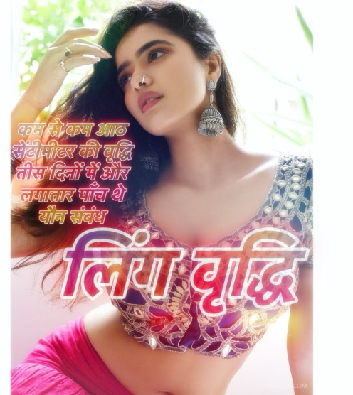

यदि आप बहने वाले फिटेड कपड़े पसंद करते हैं, तो हमने आपके लिए ड्रेस ढूंढ ली है! इस आरामदायक वी-गर्दन की पोशाक में चोली भर में बहुत कुछ है और आपके पसंदीदा ग्लैम स्टेटमेंट नेकलेस के साथ परफेक्ट होगा! फिट हथियार और क्वार्टर लंबाई आस्तीन। सामान: दुपट्टा के बिना ठंडे पानी में हैंड वाश अलग से। अनूठी शैली, आपको सुंदर, फैशनेबल, सेक्सी और सुरुचिपूर्ण बनाती है। फ़ीचर: ऊन लंबाई: मिनी पोशाक ड्रेस की लंबाई: घुटने के ऊपर यह किसी भी मौसम के लिए फिट है, आप इसे स्प्रिंग, समर, फॉल, विंटर, सिंपल लेकिन फैशन स्टाइल ड्रेस में पहन सकती हैं। रंगों और आकार के विनिर्देशों में थोड़ी भिन्नता हो सकती है। कंप्यूटर चित्र समाधान और मॉनिटर सेटिंग्स के कारण वेबसाइट के माध्यम से रंग थोड़ा अलग दिखाई दे सकते हैं। हैंड वाश या मशीन वॉश, ब्लीच न करें कंप्यूटर चित्र समाधान और मॉनिटर सेटिंग्स के कारण वेबसाइट के माध्यम से रंग थोड़ा अलग दिखाई दे सकते हैं। हमारी सभी महिलाओं के शर्ट और ड्रेस हमारे ब्रांड के आकार के अनुसार बने हैं, कृपया हमारे साइज़ चार्ट के अनुसार जो साइज़ आपको सूट करता है उसे चुनें।
विभाग: महिला पहली तारीख उपलब्ध: 15 सितंबर, 2021 ASIN: B086PW81WK अमेज़न बेस्ट सेलर्स रैंक: # 4,018 कपड़ों, जूतों और आभूषणों में ( वस्त्र, जूते और आभूषण में शीर्ष 100 देखें ) # 71 में महिलाओं की टी-शर्ट  बेली सेकरंग